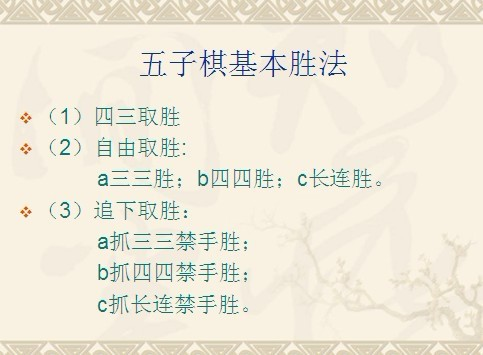

求鼓励、求花花、求威望。
［此帖子已被 华夏小宝 在 2012-11-1 15:22:00 编辑过］
［此帖子已被 华夏小宝 在 2012-11-1 15:30:39 编辑过］
［此帖子已被 虎哥 在 2012-11-1 17:18:59 编辑过］
 每次看到LZ一此类帖子就忍不住想吐嘈
每次看到LZ一此类帖子就忍不住想吐嘈哎，那么高难度的地毯，小弟我实在做不出。
地毯的重任就交给您老了。
不给就不给嘛，没必要吐槽吧！
难道总结的不好么，虽然缺乏新意和创造性？
引用：很明显文章没什么实质性内容吧
原文由 华夏小宝 发表于 2012-11-1 20:06:02 :不给就不给嘛，没必要吐槽吧！
难道总结的不好么，虽然缺乏新意和创造性？
引用：是，请问你是哪位？
原文由 冷面孤煞 发表于 2012-11-1 18:51:51 :
梧桐风是福州农大梧桐么？
引用：
原文由 华夏小宝 发表于 2012-11-1 20:03:50 :哎，那么高难度的地毯，小弟我实在做不出。
地毯的重任就交给您老了。
我没让你做地毯，只是想说这点东西离威望还有点远，且不说人家拆了几个月的棋谱，论坛里有点质量的东西怎么着也得思量个几天吧。原文这几句话甚至单开一个帖都有点浪费资源。考虑到你是论坛新人，建议你先潜心在论坛里学习一段时间，论坛里有个五子剑系列讲座很全面也很经典ShowPost.asp?ThreadID=3130。
PS：我做不做地毯，还真用不着你置喙。
虎哥说话语气好重，看着让人有点小怒气油然而生。
偶以后不附加“要花花和威望”的信息了。
对于你推荐的这个系列讲座，刚才看了看，要先感谢虎哥你的热心。我的水平不咋地，这讲座讲得很详细，对初学者很受用，感谢五子险的贡献，不过，这讲座真心不适合我。
偶认真看完了《图解五子棋入门》、《三手胜五子棋题解》，《天狗道场》做完了50道题，《坂田吾朗追诘胜》从后往前做完了30道，《五子连珠必胜法》认真看完了浦月的内容，现正在看《五子棋实战必读-基础定式》和研究五子棋段位棋手的对局谱。
算了，偶以后不轻易发帖了。
［此帖子已被 华夏小宝 在 2012-11-1 21:03:49 编辑过］
［ 逆刃 于 2012-11-1 21:09:29 时花20金币送鲜花一朵］
［ 五步之道 于 2012-11-2 0:13:55 时花20金币送鲜花一朵］
［ 华夏小宝 于 2012-11-2 1:06:47 时花20金币送鲜花一朵］
［ 华夏小宝 于 2012-11-2 1:06:47 时花20金币送鲜花一朵］
［ 华夏小宝 于 2012-11-2 1:06:47 时花20金币送鲜花一朵］
［ 华夏小宝 于 2012-11-2 1:06:47 时花20金币送鲜花一朵］
［ 华夏小宝 于 2012-11-2 1:06:47 时花20金币送鲜花一朵］
［ 华夏小宝 于 2012-11-2 1:06:47 时花20金币送鲜花一朵］
［ 华夏小宝 于 2012-11-2 1:06:47 时花20金币送鲜花一朵］
［ 华夏小宝 于 2012-11-2 1:06:47 时花20金币送鲜花一朵］
［ 华夏小宝 于 2012-11-2 1:06:47 时花20金币送鲜花一朵］
［ 华夏小宝 于 2012-11-2 1:06:47 时花20金币送鲜花一朵］
谢谢逆刀大哥，感动啊。
偶保证，以后不发傻逼似的帖子了，呵呵。
［ 有志青年 于 2012-11-2 11:35:46 时花20金币送鲜花一朵］
［ 有志青年 于 2012-11-2 11:35:46 时花20金币送鲜花一朵］
［ 有志青年 于 2012-11-2 11:35:46 时花20金币送鲜花一朵］
［ 有志青年 于 2012-11-2 11:35:46 时花20金币送鲜花一朵］
［ 有志青年 于 2012-11-2 11:35:46 时花20金币送鲜花一朵］
小宝还年轻 以后是你们的天下 好好学吧
［ 华夏小宝 于 2012-11-2 1:07:45 时花20金币送鲜花一朵］
［ 华夏小宝 于 2012-11-2 1:07:45 时花20金币送鲜花一朵］
［ 华夏小宝 于 2012-11-2 1:07:45 时花20金币送鲜花一朵］
［ 华夏小宝 于 2012-11-2 1:07:45 时花20金币送鲜花一朵］
［ 华夏小宝 于 2012-11-2 1:07:45 时花20金币送鲜花一朵］
［ 华夏小宝 于 2012-11-2 1:07:45 时花20金币送鲜花一朵］
［ 华夏小宝 于 2012-11-2 1:07:45 时花20金币送鲜花一朵］
［ 华夏小宝 于 2012-11-2 1:07:45 时花20金币送鲜花一朵］
［ 华夏小宝 于 2012-11-2 1:07:45 时花20金币送鲜花一朵］
［ 华夏小宝 于 2012-11-2 1:07:45 时花20金币送鲜花一朵］
总结不全面，建议好好学习后再总结
［ 华夏小宝 于 2012-11-2 12:11:59 时花20金币送鲜花一朵］
［ 华夏小宝 于 2012-11-2 12:11:59 时花20金币送鲜花一朵］
 好像后排有花
好像后排有花［ 华夏小宝 于 2012-11-2 16:47:58 时花20金币送鲜花一朵］
［ 华夏小宝 于 2012-11-2 16:47:58 时花20金币送鲜花一朵］